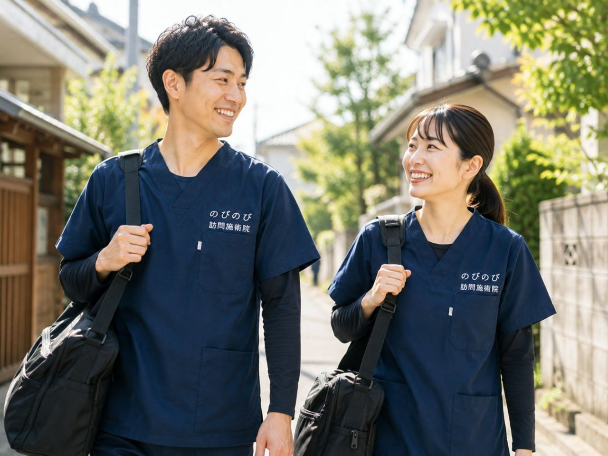

立ち上がるときにズキッとくる、歩き始めの一歩がつらい、階段の下りがこわい。尼崎市でこうした膝の痛みをかかえながら、通院そのものが負担になっている方が多くおられます。膝が痛むと外に出るのがおっくうになり、動かないうちに脚の力が落ちて、さらに動きにくくなる。そんなときに在宅でできることと、まず整形外科に相談したほうがよい目安、費用や対応エリアまでを、順を追ってお伝えします。
要点から。膝の痛みの原因を見きわめて治療するのは整形外科など医師の役割で、医療が主役です。すり減った軟骨や関節の変形そのものは元に戻せません。訪問鍼灸はその補助として、膝まわり・太もも・お尻のこわばりを和らげ、血のめぐりを促し、動ける範囲を保つお手伝いをします。医師が必要と認めれば、要介護認定がなくても医療保険で受けられ、自己負担は1割の方で1回およそ395円（総額3,950円）が目安です。
尼崎の暮らしと膝の痛み、外に出る機会を減らさないために
JR尼崎や阪神尼崎の周辺は買い物先も医院も比較的まとまっていますが、それでも膝が痛むと「ちょっとそこまで」の距離がずいぶん遠く感じられるものです。立花や塚口の商店街、阪急武庫之荘や園田の駅前まで歩くのがおっくうになり、園田や大庄あたりの静かな住宅地では、一度外出を控えると人と会う機会そのものが減っていきます。膝の痛みは、単に脚のつらさにとどまらず、暮らしの行動範囲を少しずつ狭めてしまうところに難しさがあります。のびのび訪問施術院は、そうした尼崎の生活圏で「動ける範囲を保つ」ことを大切に、ご自宅へうかがっています。
とりわけ多いのが、立ち上がる瞬間や歩き始めのこわばり、階段の下りでひざ裏に走る痛み、正座がつらくて床の生活が億劫になる、といった声です。膝の痛みで立ち座りがつらい方へもあわせてご覧いただくと、日々の困りごとの背景が見えてきます。
変形性膝関節症と「動かさない悪循環」
年齢を重ねた膝の痛みで多いのが変形性膝関節症です。軟骨がすり減り、関節に腫れやこわばりが出て、曲げ伸ばしの範囲（可動域）が少しずつ狭くなっていきます。厄介なのは、痛いから動かさない、動かさないから太ももの筋力が落ちる、筋力が落ちるから膝を支えきれずさらに痛む、という悪循環に入りやすいことです。出屋敷や小田のあたりでも、「痛みをかばううちに家の中でも動かなくなった」というお話をよくうかがいます。
使わない期間が続くと、関節や筋肉が固まる廃用が進みます。そのため、痛みと相談しながら動きを保つ視点が欠かせません。太ももの前側を中心に、体の様子を見ながら筋肉に働きかけ、関節がこわばらないよう可動域を守っていく、地道ですが、これが日々の立ち座りや歩きやすさにつながっていきます。
訪問施術でできること、できないこと
膝まわりの筋肉のこわばりをゆるめ、腫れやだるさを和らげ、動かせる範囲を保つための機能訓練を組み合わせていきます。機能訓練は鍼灸に加えて行うもので、追加料金はかかりません。ただし、これは病気そのものを治すものではありません。関節の変形そのものを元に戻すわけではなく、あくまで動きやすさや日々の楽さを支える関わりだとお考えください。効き方には個人差があり、その日の膝の状態を見ながら加減を調整していきます。
膝に強い腫れや熱感がある、急に大きく腫れた、といったときは、まず整形外科など医療機関での確認が先です。医療を主役に、そこに施術を重ねていくのが基本の考え方です。
保険と料金のこと、尼崎で始めるときの目安
医療保険のはり・きゅうには対象となる6つの疾病（神経痛・リウマチ・頸肩腕症候群・五十肩・腰痛症・頸椎捻挫後遺症）があり、膝の痛みそのものはこの枠とは別ですが、膝をかばって出る腰や脚の痛みについてのケアジの範囲、あるいは医師の判断による対応として進めていきます。いずれも医療保険（療養費）と医師の同意書が必要ですが、要介護認定は不要です。介護保険の限度額とは別枠のため、併用できます。なお、同じ部位について医療保険のリハビリと鍼灸を同じ月に同時算定することはできません。
料金は1回の施術が総額3,950円で、自己負担は1割の方でおよそ395円です。週2回であれば1割負担で月およそ3,160円が目安になります。エリア内は出張費がかからず料金は一律です。仕組みの詳しいところは料金はいくら？医療保険の自己負担額と仕組みにまとめています。
尼崎市への訪問と、暮らしを続ける支え
のびのび訪問施術院は、JR尼崎・立花・塚口、阪神尼崎・出屋敷、阪急武庫之荘・園田、大庄や小田といった尼崎市内の各エリアへうかがっています。ご自宅で受けられるので、痛む膝で電車やバスに乗る負担がなく、天候や体調に左右されにくいのが訪問の良さです。どこまで来てもらえるかは対応エリアはどこまで来てもらえる？で確認いただけます。
膝の痛みは、放っておくと外出が減り、動かないことでさらに動きにくくなっていきます。だからこそ、痛みと折り合いをつけながら「今できる動き」を保つことが、尼崎での暮らしを長く続けるうえで大きな意味を持ちます。ご家族やケアマネジャー、施設との連携も含め、まずはお気軽にご相談ください。尼崎市での訪問全般については尼崎市の訪問鍼灸マッサージもご案内しています。
よくある質問
尼崎市のどのあたりまで来てもらえますか？
JR・阪神・阪急の各尼崎の周辺から、塚口、立花、武庫之荘、園田、大物など尼崎市内を広くうかがっています。伊丹市にも対応しています。詳しいエリアは、お問い合わせの際にご確認ください。
変形性膝関節症でも受けられますか？
膝の慢性的な痛みについて医師が必要と認め、通院がむずかしければ、医療保険の対象になります。軟骨の変形そのものは元に戻せませんが、膝を支える筋肉のこわばりを和らげ、動きやすさを保つお手伝いをします。
立ち座りや階段がつらいのですが、通えなくても大丈夫ですか？
はい。訪問なので通う必要はなく、ご自宅で楽な姿勢のまま受けられます。痛みの出る動作を無理に行うことはありません。膝まわりや太もものこわばりを和らげ、立ち座りや階段など日常の動作が少しでも軽くなるようお手伝いします。
要介護認定を受けていなくても利用できますか？
利用できます。訪問鍼灸で使うのは医療保険で、医師が必要と認めれば要介護認定の有無に関わらず受けられます。介護保険の区分支給限度額とも別枠なので、ほかの介護サービスの枠を使うこともありません。
寝たきりや車いすでも受けられますか？
はい。ベッドや車いすの上など、その方の楽な姿勢に合わせて施術します。刺激の強さもその日の体調に合わせて調整しますので、体力に不安がある方でも無理のない範囲で受けられます。
費用はどのくらいかかりますか？
1回の施術は総額3,950円で、自己負担は1割の方でおよそ395円です。ひと月の目安は、1割の方で週1回およそ1,580円、週2回でおよそ3,160円、週3回でおよそ4,740円ほど。別途の出張費はかからず、エリア内は同じ料金です。
ケアマネジャーや施設からの相談もできますか？
歓迎しています。ケアマネジャーと施術の様子を共有しながら、ケアプランと足並みをそろえて進められます。高齢者施設に入居中の方への訪問にも対応していますので、ご担当者からのお問い合わせもお受けします。

池田市で膝の痛みにお悩みの方へ｜立ち座り・歩き始めのつらさを支える訪問鍼灸マッサージ
続きを読む
尼崎市で坐骨神経痛・腰から足の痛みにお悩みの方へ｜自宅で受けられる訪問鍼灸マッサージ
続きを読む
尼崎市で脳梗塞の後遺症のケアをお探しの方へ｜自宅で続ける訪問鍼灸
続きを読む膝の痛みで立ち座りがつらい高齢のご家族へ｜訪問鍼灸マッサージという選択肢
続きを読む
尼崎市で五十肩・肩の痛みにお悩みの方へ｜自宅で受ける訪問鍼灸
続きを読む